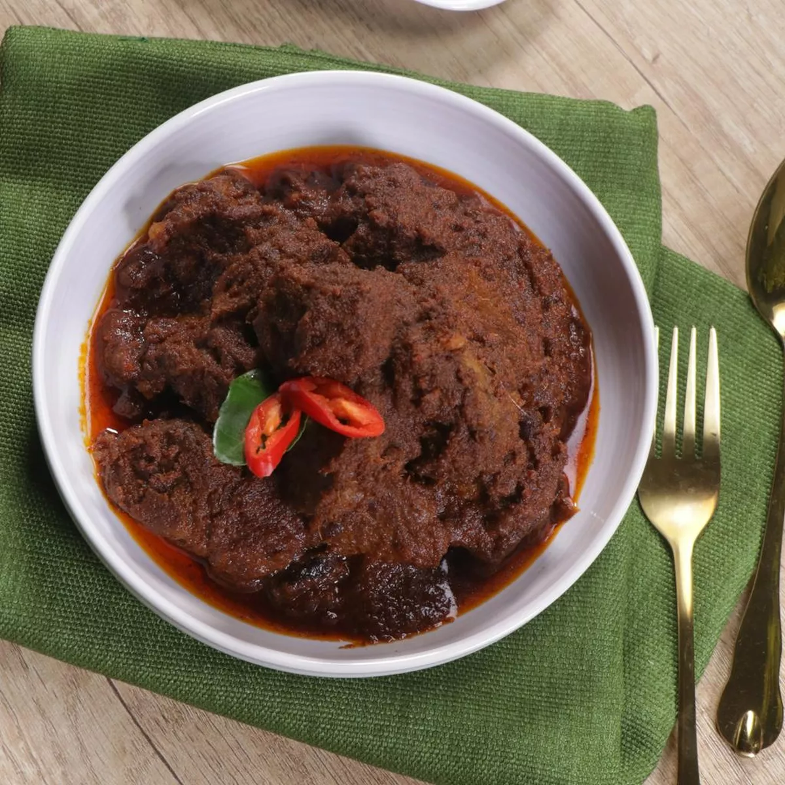

Rendang

Description
Slow cooked beef with spices, Indonesian-style. If you eat rendang with
warm rice, it's really delicious! Follow the recipe below!
Ingredients
- 1 kg lean beef, cut into 4 cm dice
- 2.5 L coconut milk from 3 coconuts
- 5 lemongrass stalks, mushed
- 1 sheet of turmeric leaf, tie it into a knot
- 15 lime leaves
- 2 pieces of kandis acid
Wet Ingridients (puree/mashed)
- 250 g curly red chili
- 200 g red onion
- 7 cloves of garlic
- 3 cm ginger
- 3 cm galangal
- 1 tbsp salt
Steps
-
Place the meat in a thick-bottomed skillet. Add the mashed/pure
ingridient, coconut milk, lemon grass, turmeric leaves, and lime leaves,
cook over medium heat, stirring until boiling.
-
Reduce the heat, continue to cook until the coconut milk thickens. Stir
occasionally so the spices don't burn.
-
Add kandis acid, continue cooking until the meat is slightly blackish,
and the coconut milk is oily. Lift, serve warm :)
back to home